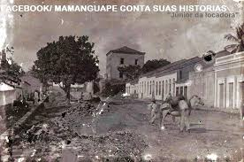

A História de Mamanguape - PB
Mamanguape é uma das cidades mais antigas do estado da Paraíba e tem uma história rica e cheia de curiosidades. Situada no litoral norte do estado, a cidade se destaca por sua cultura, economia e pelo seu importante papel na história da região. Vamos conhecer um pouco mais sobre essa cidade encantadora!
Os primeiros habitantes
Antes da chegada dos colonizadores portugueses, a região de Mamanguape era habitada pelos índios Potiguaras. Eles viviam da pesca, da agricultura e do extrativismo, aproveitando os recursos naturais da região.
O nome "Mamanguape" vem do tupi-guarani e significa "lugar onde se apanham muitos peixes", uma referência direta às riquezas dos rios locais.
A fundação da cidade
A cidade de Mamanguape começou a se desenvolver no século XVII, quando os portugueses estabeleceram engenhos de açúcar na região. Durante o período colonial, tornou-se um importante centro econômico devido à produção de açúcar e ao comércio.
Com o tempo, a cidade cresceu e se tornou um dos principais polos econômicos e culturais da região. Seu centro histórico ainda guarda construções antigas que contam um pouco sobre seu passado.
Um dos eventos históricos mais marcantes de Mamanguape foi sua participação na luta contra invasores estrangeiros, como holandeses e franceses, que tentaram tomar o território brasileiro.